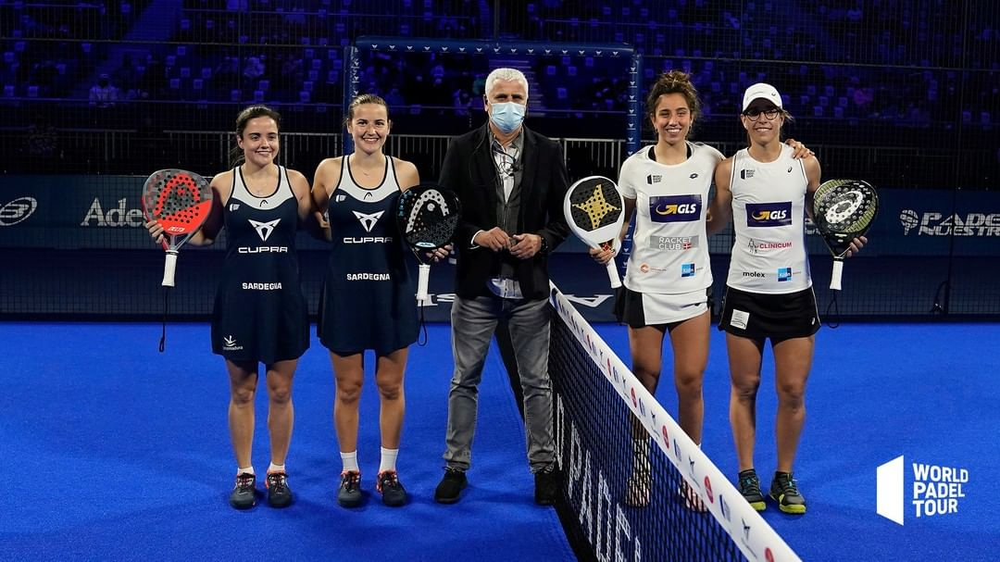

HURACÁN DE PÁDEL EN EL WiZink
Este fin de semana salieron campeones del primer open del año bela y sanyo, en el masculino, y Ari Sánchez y la dinamita Pula Josemaría en el femenino.
Si quieres conocer más información pincha en el título de la noticia o en este enlace